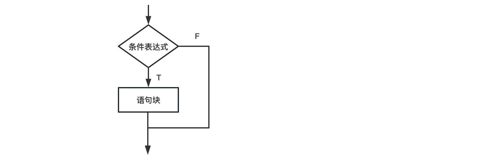
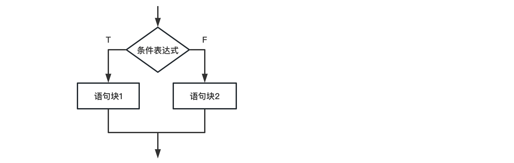
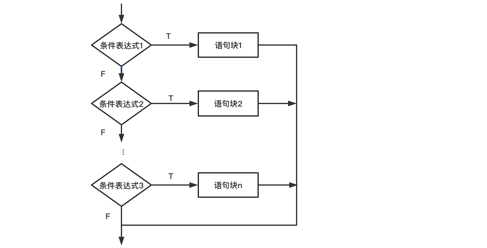

判断语句#
流程是指程序运行时语句的执行次序。Python包含了三种基本流程控制结构：顺序结构、分支结构、循环结构。
顺序结构是从上往下的顺序逐剧执行的结构，先执行位置在前的语句、后执行位置在后的语句。本章主要讲授分支结构、循环结构。
分支结构又称选择结构，它是一种在两条或更多条执行路径中选择一条执行的语句控制结构。
（一）单分支结构#
if 语句单分支结构的语法形式为：
if(条件表达式):
语句块

若条件表达式的逻辑值为True则执行语句块，否则不执行语句块。if语句的条件表达式之后需要添加冒号（:），语句块内的每行语句均需要通过缩进表示同属一个语句块。
运行下述例子：
grade = int(input('输入成绩后，按【回车键】确认')) #Python键盘输入默认为字符串，这里做类型转换，把字符串转成整数
if(grade < 60): # 如果输入小数，也就是浮点数，使用float()来转换
print('很不幸，你挂科了！')
很不幸，你挂科了！
练习：if语句#
如果输入成绩在60分和80分之间，请打印“良好”
（二）双分支结构#
if 语句双分支结构的语法形式为：
if(条件表达式):
语句块1
else:
语句块2

若条件表达式的逻辑值为True，则执行语句块1；否则执行语句块2。
grade = int(input('输入成绩后，按【回车键】确认'))
if(grade < 60):
print('很不幸，你挂科了！')
else: # 注意else与if对齐
print('恭喜！通过考试')
恭喜！通过考试
（三）多分支结构#
if语句多分支结构的语法如下：
if(条件表达式1):
语句块1
elif(条件表达式2):
语句块2
...
elif(条件表达式n):
语句块n
else:
语句块n+1

grade = int(input('输入成绩后，按【回车键】确认'))
if(grade < 60):
print('很不幸，你挂科了！')
elif(grade >= 60 and grade < 80): # 注意elif与if对齐
print('你及格了！')
elif(grade >= 80 and grade < 90): # 注意elif与if对齐
print('表现不错！')
elif(grade >= 90 and grade<=100): # 注意elif与if对齐
print('优秀！')
else:
print('您输入的成绩有误！')
优秀！
练习：计算小明的体重#
小明身高1.75米，体重80.5kg。请根据BMI公式（体重除以身高的平方）帮小明计算他的BMI指数，并根据BMI指数：
低于18.5：过轻
18.5-25：正常
25-28：过重
28-32：肥胖
高于32：严重肥胖
Tips：
用if-elif判断并打印结果
练习：计算课程总成绩#
相信很多老师在授课的第一节课都会告诉学生，本学期的考核和成绩评定方式，例如：
课程总成绩=平时成绩（30%）+测试（70%）
平时成绩=出勤（10%）+课内作业（20%）
测试=期中实验报告（10%）+ 期末实验报告（60%）
出勤不满总出勤周的1/3，无法参加期末考试
现在学校要求我们编写一个程序，让学生输入他本学期的16周的出勤次数、平时作业成绩、期中测验分数和期末卷面成绩来计算出他的总成绩。请告知一下同学他的分数：
student_01 = {'name':'zhangxiaoxian', #姓名
'attendance_numbers': 14, #出勤数
'homework_score': 75, #平时作业分数
'mid_term_exam_score': 80, #期中考试分数
'final_term_score': 85} #期末考试分数
student_02 = {'name':'wangpeng',
'attendance_numbers': 3,
'homework_score': 80,
'mid_term_exam_score': 90,
'final_term_score': 95}
student_03 = {'name':'lifeng',
'attendance_numbers': 12,
'homework_score': 60,
'mid_term_exam_score': 70,
'final_term_score': 75}
练习答案：if语句#
如果输入成绩在60分和80分之间，请打印“良好”
grade = float(input('输入成绩后，按【回车键】确认'))
if(60 < grade and grade < 80):
print('成绩(%s) 良好！' %grade)
成绩(75.0) 良好！
练习答案：计算小明的体重#
定义小明的身高、体重为浮点型变量
height = 1.75
weight = 80.5
计算BMI公式
BMI = weight/(height*height)
print(BMI)
使用if elif else判断语句：
if BMI < 18.5:
print('BMI指数 过轻!')
elif BMI < 25:
print('BMI指数 正常!')
elif BMI < 28:
print('BMI指数 过重!')
elif BMI < 32:
print('BMI指数 肥胖!')
else:
print('BMI指数 严重肥胖!')
如果需要加入input语句，动态输入，可以写成：
height = float(input('输入身高（米）'))
weight = float(input('输入体重（Kg）'))
BMI = weight/height**2
if(BMI<18.5):
print('过轻')
elif(BMI>=18.5 and BMI<25):
print('正常')
elif(BMI>=25 and BMI<28):
print('过重')
elif(BMI>=28 and BMI<32):
print('肥胖')
elif(BMI>=32):
print('严重肥胖')
正常
练习答案：计算课程总成绩#
我们定义以下变量：
中文名词 |
英文变量名称 |
|---|---|
课程总成绩 |
total_score |
平时成绩 |
regular_score |
期末成绩 |
final_term_score |
出勤次数 |
attendance_numbers |
出勤率 |
attendance_rate |
平时作业成绩 |
homework_score |
期中考试成绩 |
mid_term_exam_score |
接下来，我们分步骤来完成程序，从最核心的步骤开始：
第一步 计算出勤率
student = {'name':'zhangxiaoxian', #姓名
'attendance_numbers': 14, #出勤数
'homework_score': 75, #平时作业分数
'mid_term_exam_score': 80, #期中考试分数
'final_term_score': 85} #期末考试分数
attendance_rate = student['attendance_numbers']/16
第二步 计算平时成绩
homework_score = student['homework_score']
mid_term_exam_score = student['mid_term_exam_score']
regular_score = attendance_rate * 100 * 0.1 + homework_score * 0.2
第二步 计算总成绩
final_term_score = student['final_term_score']
total_score = regular_score * 0.3 + mid_term_exam_score * 0.1 + final_term_score * 0.6
第三步 打印
print('Hi, your total score is ', total_score)
Hi, your total score is 75.9
第四步 判断
if attendance_rate < 1/3: # 如果出勤率低于1/3, 重修；大于1/3, 打印总成绩
print('Your attendance rate:', attendance_rate, 'which below 1/3,')
print('Your have failed this course, please retake!')
else:
print('Hi, your total score is ', total_score)
将之前几步的代码，合并在一起：
student = {'name':'zhangxiaoxian', #姓名
'attendance_numbers': 14, #出勤数
'homework_score': 75, #平时作业分数
'mid_term_exam_score': 80, #期中考试分数
'final_term_score': 85} #期末考试分数
attendance_rate = student['attendance_numbers']/16
if attendance_rate < 1/3:
print('Your attendance rate:', attendance_rate, 'which below 1/3,')
print('Your have failed this course, please retake!')
else:
homework_score = student['homework_score']
mid_term_exam_score = student['mid_term_exam_score']
regular_score = attendance_rate * 100 * 0.1 + homework_score * 0.2
final_term_score = student['final_term_score']
total_score = regular_score * 0.3 + mid_term_exam_score * 0.1 + final_term_score * 0.6
print('Hi, your total score is ', total_score)
尝试把student换成student_01, student_02, student_03，看看结果是否符合预期。student_02出勤率不够1/3，程序要告诉他重修。